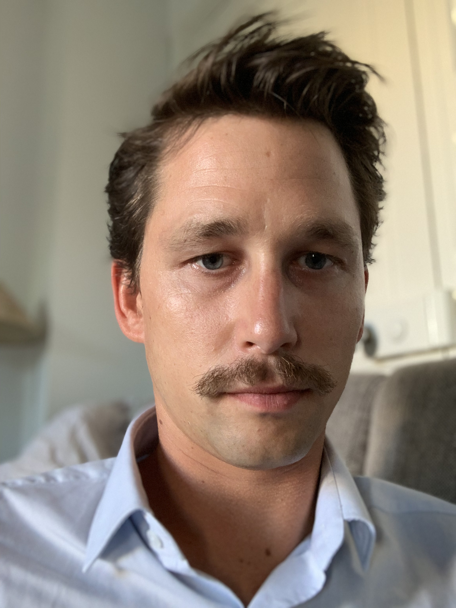

Charles DELANNOY
Consultant en organisation et management & developpeur en devenir
Mon expérience
- Janvier 2019 à Aujourd'hui- Captive bancaire d'un constructeur automobile - Cadrage de la transformation d'un service de LLD sur les aspects processus, outils, organisation et offres
- Mai 2018 à Décembre 2018 - Constructeur automobiles - Design d'un logiciel de vente pour internationalisation
- Octobre 2017 à Avril 2018 - Constructeur automobile - Déploiement d’un logiciel de vente basé sur Salesforce
- Mai 2017 à Spetembre 2018 - Constructeur automobile - Conduite du changement au sein d’un projet de poste de vente basé sur Salesforce
- Janvier 2017 à Mars 2018 - Constructeur automobile- PMO sur un projet de transformation digital CRM
- Mai 2016 à Octobre 2016 - Producteur d'énergie - Appui à l’engagement d'un projet SI autour d'un système de management intégré
- Mai 2015 à avril 2016 - Producteur d'énergie - Appui au pilotage d'un projet de migrations applicatives
Mes compétences
- Gestion de projet
- PMO
- Appui au pilotage
- AMOA
- Etude de cadrage
- Conduite du changement
- Design applicatif
Ma formation
-
Décembre 2014 - Diplomé Ingénieur généraliste, Informatique et technique de l'information & Organisation et management des entreprises
-
De 2008 à 2014 - Etudiant à HEI (Hautes Etudes d'Ingénieur)